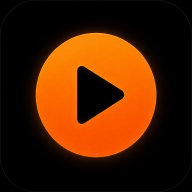
DriveRadio Слушай онлайнРеални снимки от самото приложение — не мокъпи, не обещания. Точно това виждаш, ако го инсталираш днес.
Избираш какво да се случва при свързване с колата си — веднъж, за всяко устройство. После Drive Radio просто се грижи за останалото, без нито един допълнителен тап.
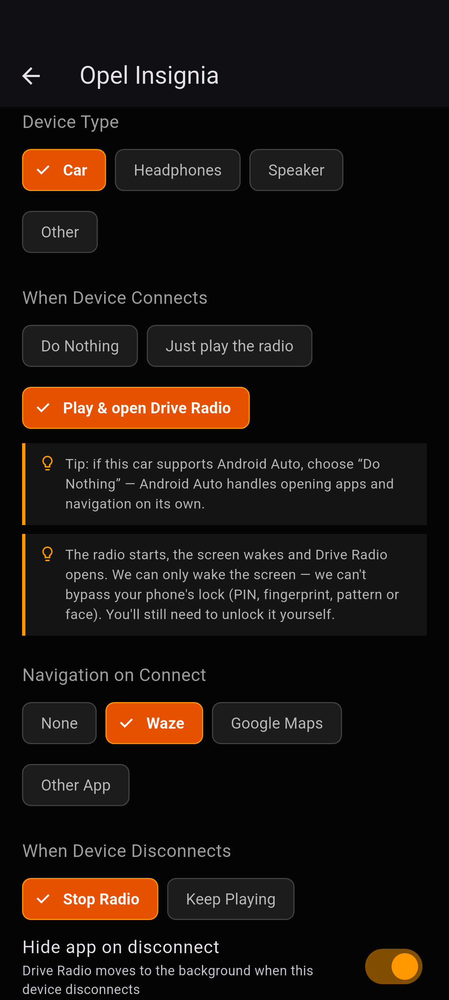
Drive Radio те превежда точно през нужните разрешения, обяснени на прост език, и спира дотам. Никакви излишни екрани.
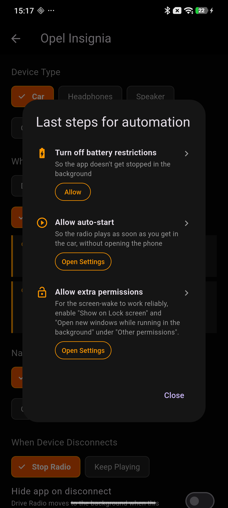
Drive Radio се появява направо в Android Auto, докато Waze или Maps карат отпред.
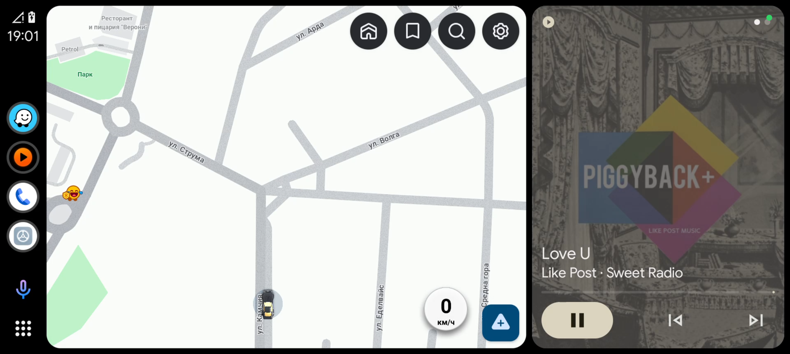
Навигация, музикално приложение и телефон — на един тап, без да търсиш из менюта докато шофираш.
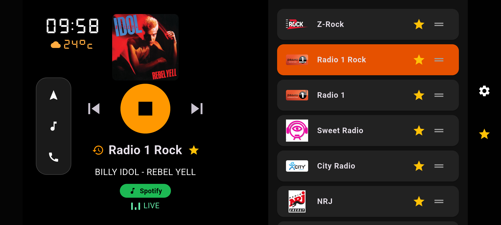
Всички български радиостанции на едно място — по държава, жанр или бързо търсене по име.
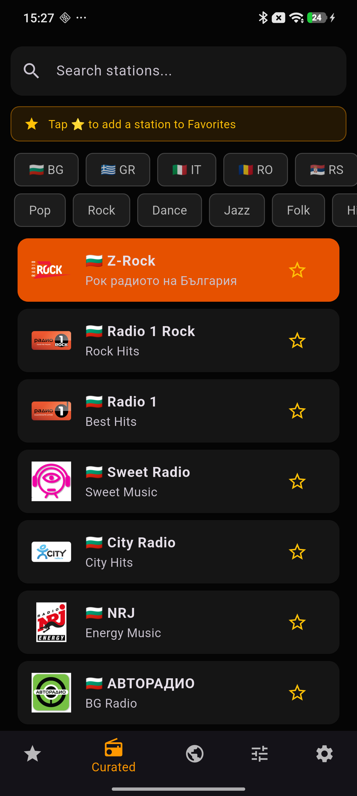
От Лондон до Токио — хиляди станции извън България, подредени по държава и жанр.
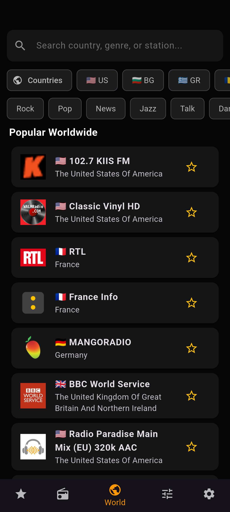
Подреди ги по свой ред, с едно плъзгане. Те тръгват първи всеки път.
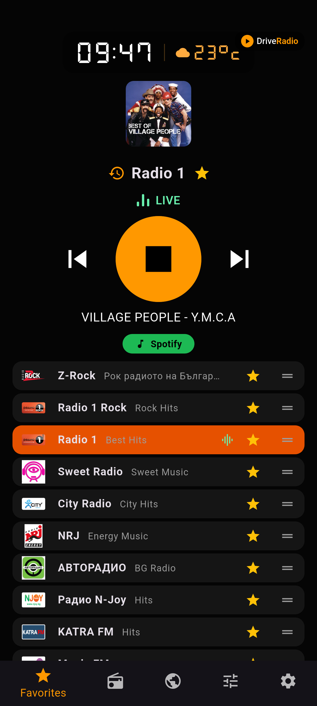
Пълна история на всичко изсвирено — търсене по песен или станция, групирано по дни.
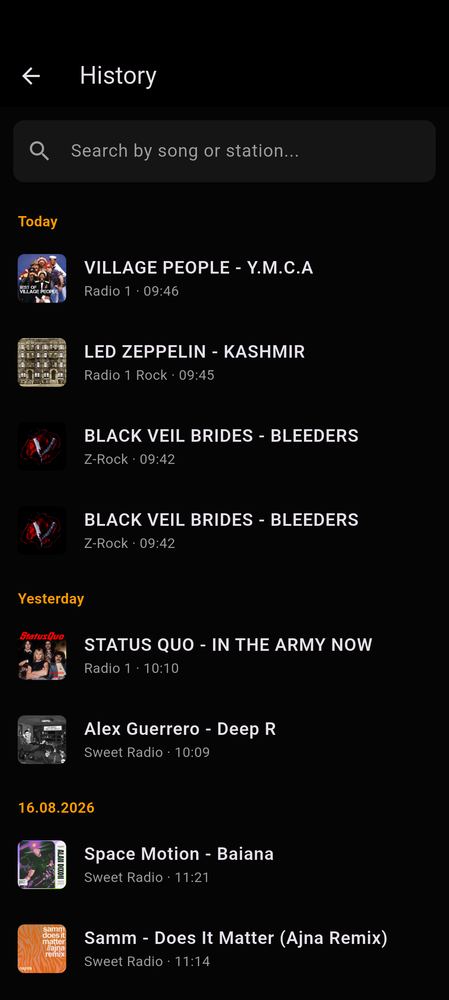
Директна връзка към Spotify, YouTube Music, Deezer и още — точно за песента, която в момента върви.
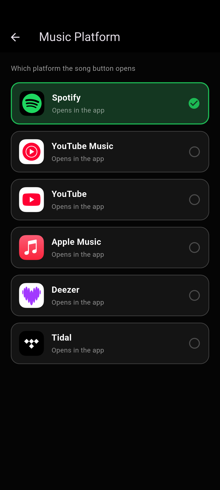
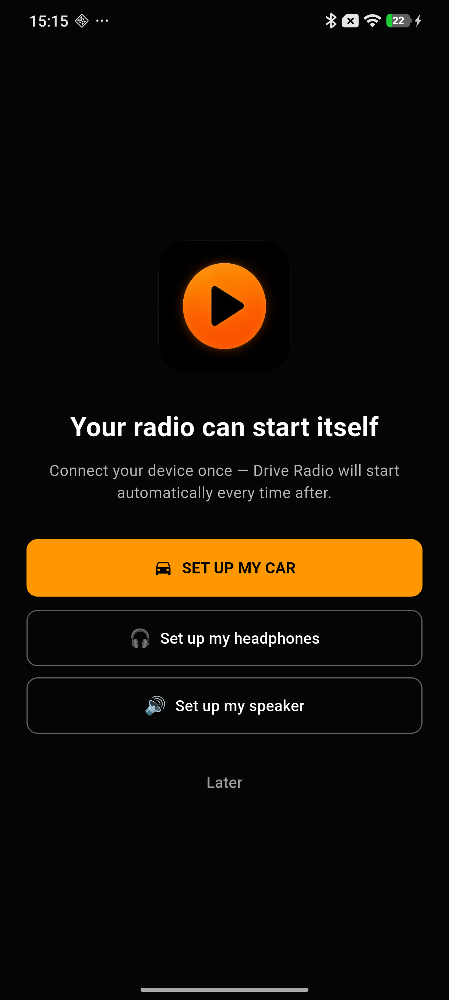
Кратко въведение, после право към музиката — без излишни екрани.
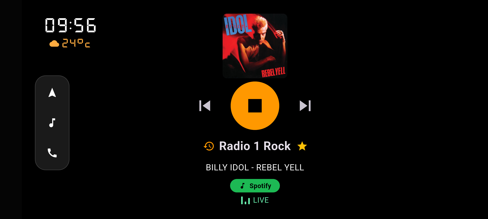
Навигация, музика, телефон — на разстояние един поглед от волана.
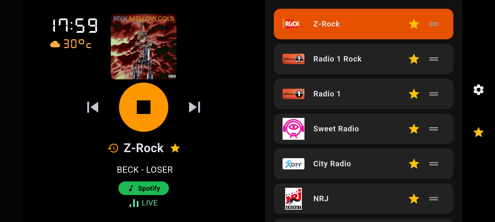
В хоризонтален режим виждаш и двете едновременно.
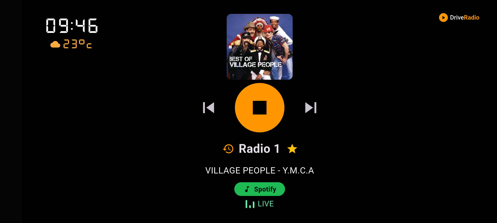
Чист, целоекранен изглед, когато списъкът не ти трябва.
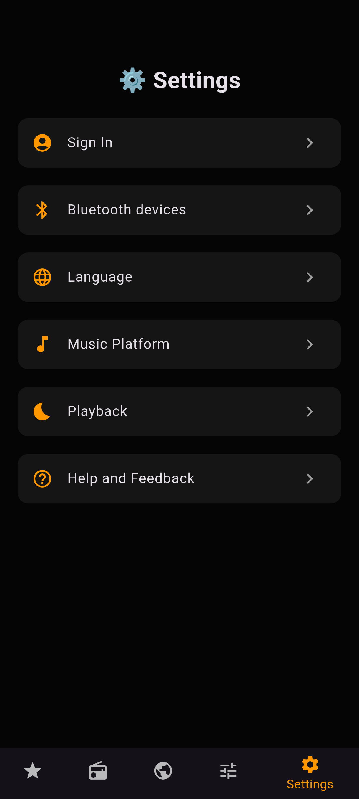
Bluetooth устройства, език, платформа, плейбек — всичко ясно подредено.
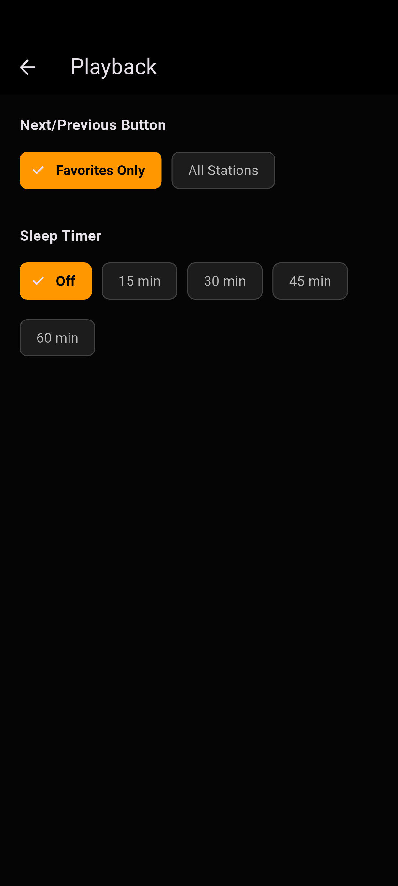
Timer за заспиване, поведение на Next/Prev — ти решаваш.
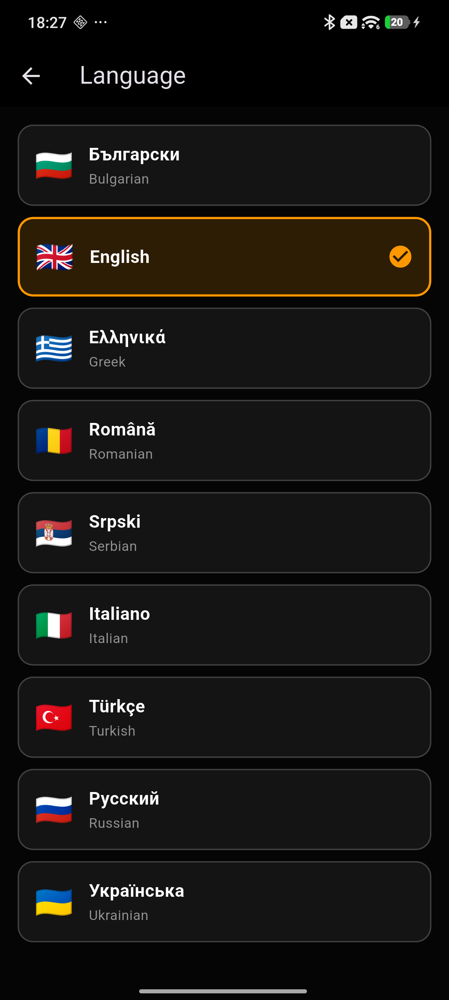
Приложението говори твоя език, не само български.
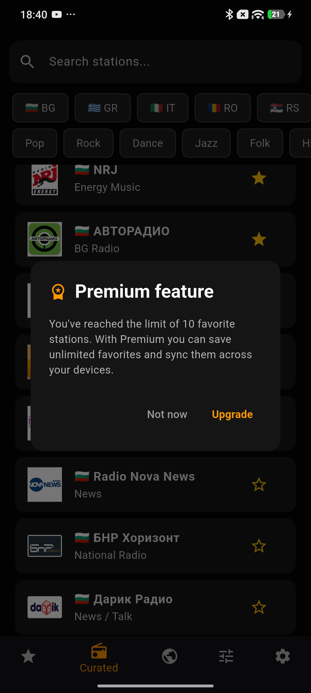
Безплатното е достатъчно добро. Premium просто прави всичко още по-приятно.
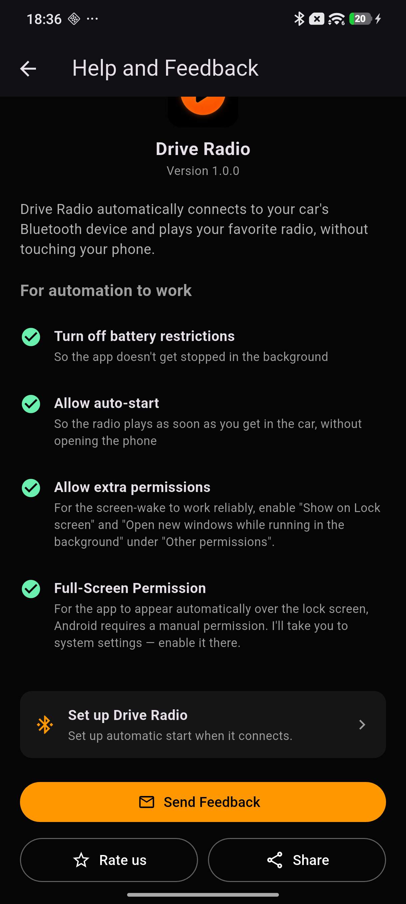
Обратна връзка и подкрепа — на един клик разстояние.